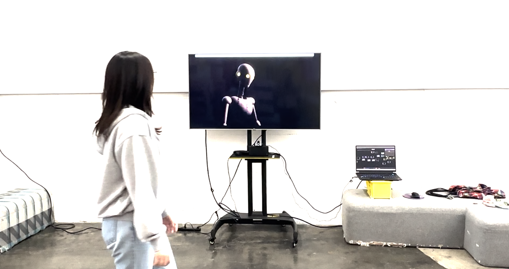

The project explores methods and approaches to promoting public engagement with interactive generative graphic environments, and algorithmic computer art in general.
Key points of engagement under exploration are: initial attention, promoting scripted interactions, promoting unscripted interactions.
We started with the following initial assumptions:
The project explores methods and approaches to promoting public engagement with interactive generative graphic environments, and algorithmic computer art in general.
Key points of engagement under exploration are: initial attention, promoting scripted interactions, promoting unscripted interactions.
We started with the following initial assumptions:
The installation consists of softwares and hardware components. While the software components are either free, open-source or low cost, and some of the hardware used are commonplace, the demands of generative algorithms require a high-end graphics card to facilitate real-time image generation.
The software combines multiple components using TouchDesigner as the foundation. The video input is processed through a plugin component by Torin Blankensmith based on Google MediaPipe with additional customisations. The machine learning models implemented in the components allow us to recognize the structure of human faces, hands, and bodies. This information is then processed through several generative graphic approaches, like Reaction-Diffusion and Optical Flow, with addition of Simplex noise.
The resulting signal is then fed as an image to a StreamDiffusion system - another plugin component, made by Lyell Hintz (dotsimulate). We tried several different diffusion models for image processing and settled on Stable Diffusion XL Turbo, a model optimized for real-time image generation.
The hardware is relatively uncomplicated, with a simple webcam used for video input and a large-screen TV or projector used for output. The most demanding part is the GPU. In our case we used an NVidia 4080 Ti, and were able to achieve from 7-8 up to 16-20 fps on the image generation, depending on the configuration.

For additional resources on Media Pipe in TouchDesigner please refer to MediaPipe TouchDesigner Plugin or a video alternative.
For additional resources on Stream Diffusion in TouchDesigner please refer to the pageSetting up your system for StreamDiffusion TD For Beginners or a video alternative.
In the process of desing and experimentation we deliberately avoided a prescribed structure, rather "leanring into the design" and allowing the prototypes themselves suggest the path of their further development. The main goal of the project was to push the boundaries of aesthetic expression of a set of chosen technologies, so we did not spend a lot of time with user research and testing. These possibilities lie in the future iterations of the project.
We started our experimentation with a series of concepts and techniques that interested us the most. We started with a series of explorations in TouchDesigner, which we used to identify both interactive and aesthetic possibilities for the project.